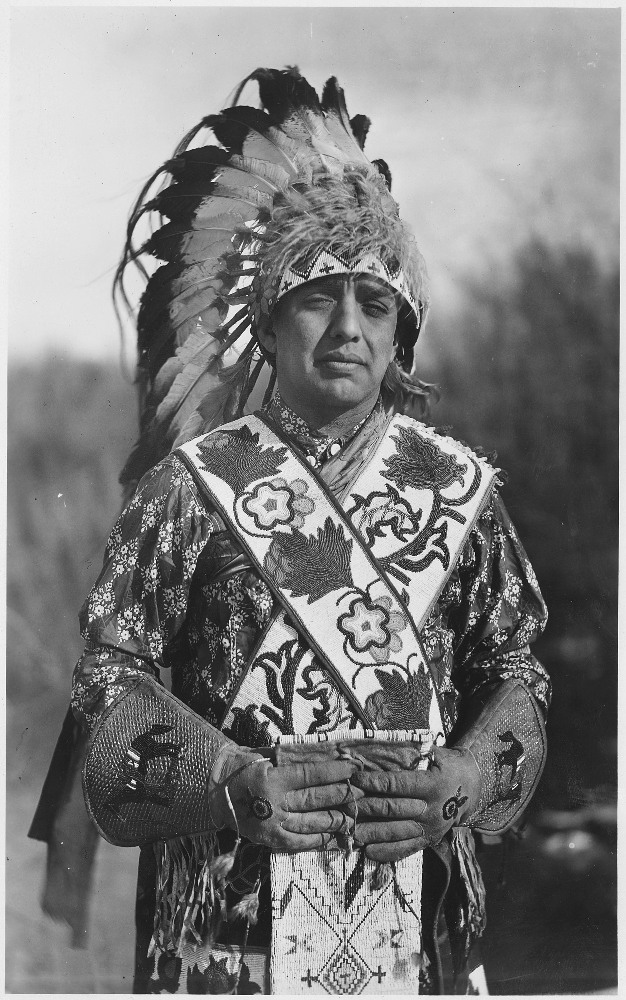

The directory/Shoshone-Bannock Tribes of the Fort Hall Reservation

George P. LaVatta, identified Shoshone-Bannock member from Fort Hall, circa1940Photographer unrecorded; Bureau of Indian Affairs records, National Archives, NAID298656; Wikimedia Commons.
Tribal government / contemporary community · Added to the original list
Shoshone-Bannock Tribes of the Fort Hall Reservation
The Shoshone-Bannock Tribes are a joint tribal government at Fort Hall. Their public history and cultural-preservation work introduce a shared community while preserving distinctions between Shoshone and Bannock peoples and languages. This guide follows community-published accounts of land, travel, food resources and the care of language and historical knowledge.
See each region’s evidence for historical or present-day scope.
Homeland / region
Idaho
Research depth
Source guide
Source collection
3 annotated resources · 3 Indigenous-led
Inspected sources
3 substantive works · selected content reviewed
Initial adequacy
Still unfinished
Source review
October 27, 2026
Names & relationshipsThis is an individually named government and community route. Its own publications and the selected institutional sources provide the scoped context below. Broader people-level reading routes are related context, not interchangeable governments, an individual citizenship determination or a boundary claim.
A source guide for a deeper dive.This entry provides a brief orientation and an organized reading path. A comprehensive deep dive has not yet been completed. Follow the annotated sources and distinguish primary community accounts from outside reference material.
Still unfinished
A compact source-led introduction to this named government. Selected public sources provide useful orientation, with limited voices, historical coverage and outcome evaluation; no comprehensive completion or community endorsement is claimed.
Assessment recorded October 27, 2026. This is separate from research completion and community review.
Compare treaty promises, relocation chronology and later land reductions with underlying records.
Review current constitutional amendments and program access before making present legal or service claims.
Add wider family, artistic and foodways accounts; no present language census or program-outcome evaluation is supplied.
Backdrop photographs & credits
These photographs have individual, documented connections to this entry. Their captions and source records define the people, place, object, and period shown; no one photograph represents every community within a broader label.
George P. LaVatta, identified Shoshone-Bannock member from Fort Hall, circa1940 Photographer unrecorded; Bureau of Indian Affairs records, National Archives, NAID298656; Wikimedia Commons.
This is a specifically named individual whose Fort Hall Shoshone-Bannock affiliation is explicitly stated by DocsTeach, rather than an ethnicity-only historical portrait assigned to a government. Use the exact personal identification in the visible caption. It is not a picture of present officeholders, every member, or a universal style of dress; design meanings are not inferred. The full Commons/NARA record, record-group provenance and U.S.-government public-domain declaration were read from actual downloaded HTML; DocsTeach actual description and rights text inspected. The live Archives catalogue requires JavaScript and exposed no substantive body, so no direct catalogue-body inspection is asserted. Original1880x3000 JPEG linked in the Commons record downloaded and visually inspected; no crop, generated content or retouching. Cards/backgrounds may crop through CSS if disclosed. Image metadata adds no substantive reading-source count.
Image, association, and reuse record reviewed 2026-10-27.
Full photographs are displayed proportionally above. A translucent background copy may be cropped by the viewport; it does not replace the complete image or its record.
The visual treatment does not change the research status, evidence, or remaining gaps recorded in this profile.
Start reading here
Named government route; nearby people-level profiles remain related reading rather than interchangeable identities. Review dates and selected-content limits are preserved.
Find the Tribes' own explanation of teaching, archives and cultural preservation.
These are selected starting points. The full annotated collection, source perspectives, inspection limits and remaining research questions follow below. A starting guide is not an exhaustive history or community endorsement.
01
A joint community and a larger homeland
The Tribes' historical overview brings Northern Shoshone and Bannock bands into a shared account of seasonal food resources, travel and the Fort Hall reservation. Its ancestral-land discussion extends beyond the modern reservation, and its land-history account describes later reductions. The breadth of that account is not a surveyed boundary. Close relationships and shared institutions also do not make the two peoples interchangeable names.
A 2024 guest essay by the Tribes' Language and Cultural Preservation Department explains Tennambo'i, the lava-flow country now within Craters of the Moon. It connects place names and routes with salmon fishing, buffalo hunting, camas and wild-carrot gathering. The department describes collaboration on public interpretation and efforts against invasive grass threatening camas habitat. These are community perspectives on particular places and work.
The preservation department describes teaching both Bannock and Shoshone, recording oral histories, preserving documents and family histories, and supporting museum and historical work. It also identifies responsibilities toward confidential or sensitive knowledge. The guide uses only publicly shared descriptions. The departmental page records an institutional approach; changing class times, personnel and access arrangements need a fresh check before a visit or enrollment decision.
Compare treaty promises, relocation chronology and later land reductions with underlying records.
Review current constitutional amendments and program access before making present legal or service claims.
Add wider family, artistic and foodways accounts; no present language census or program-outcome evaluation is supplied.
A community-specific starting guide reuses selected earlier actual-content reviews with their original dates/scopes. It does not add new global works merely because a URL appears on this route. Picture identification/rights are separate from historical adequacy or community endorsement.
Follow the reading path
Sources & further reading
Open any title to read the original source. Annotations explain what each link can help you explore.
No Indigenous-led source is identified in this entry yet. This is a gap in this collection, and does not imply an absence of community knowledge or organization.
Tribal historical overview, especially “Culture and History” and the reservation discussion. Explains the shared community’s composition, food resources, travel, and land reduction. Undated; its broad regional account is not a map of exclusively Bannock territory.
Tribal department’s guest essay, updated September 25, 2024. Explains place names, ancestral travel, interpretive collaboration, and camas habitat restoration. This is an explicitly tribal-authored perspective hosted by the park, not an anonymous federal summary.
Substantive departmental account of instruction, archives, historical research, oral-history recording, museum work, and protection of sensitive knowledge. Undated; class times, personnel, and visitor details require a fresh check before use. Programs serve the shared Shoshone-Bannock community.
Related entries may represent alternate names, constituent communities, wider groupings, or historical connections. Read the naming notes before treating entries as equivalent.
Robey’s Atlas of Indigenous North America · Compiled October 19, 2026 · Shoshone-Bannock Tribes of the Fort Hall Reservation